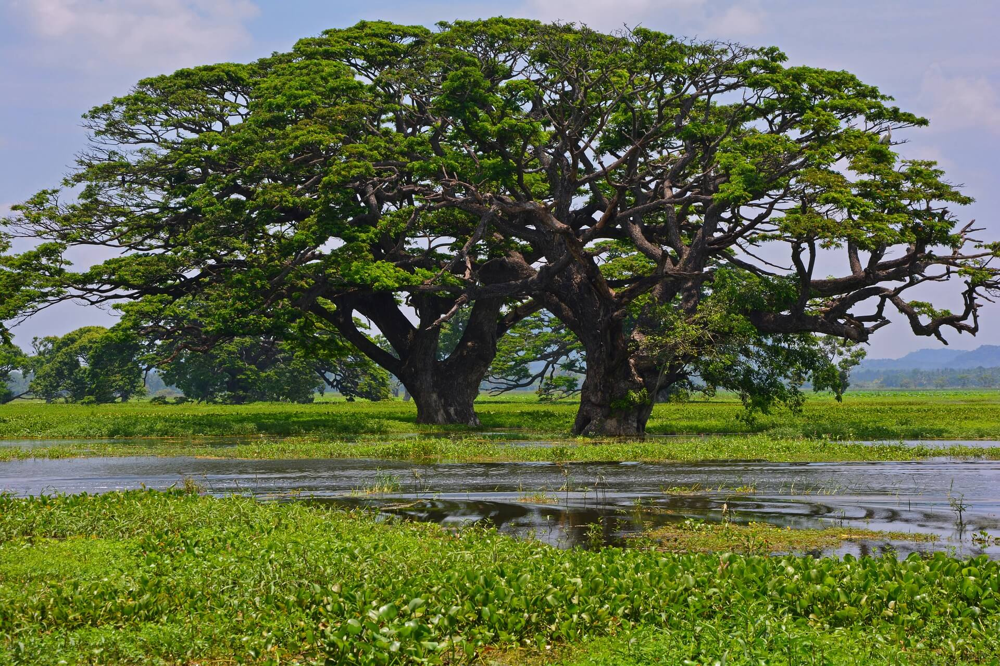
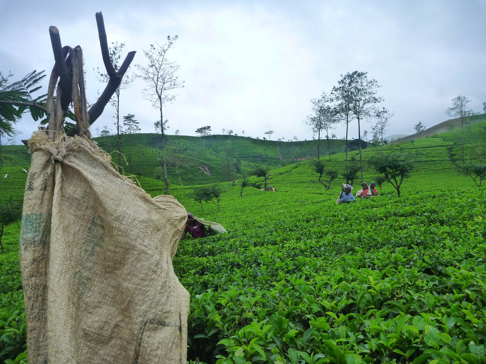
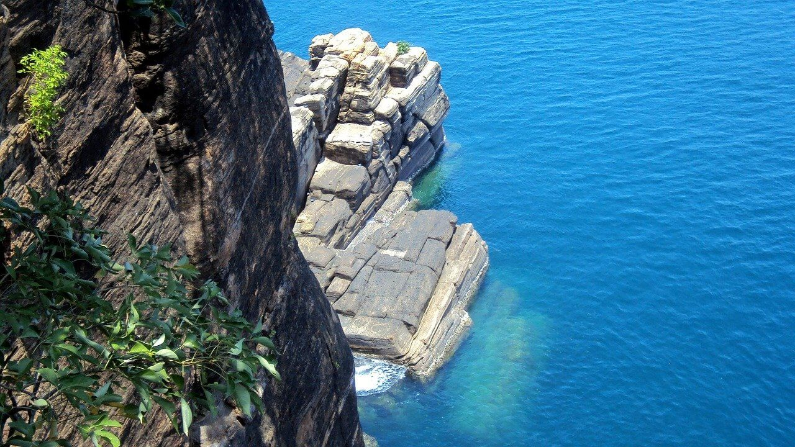
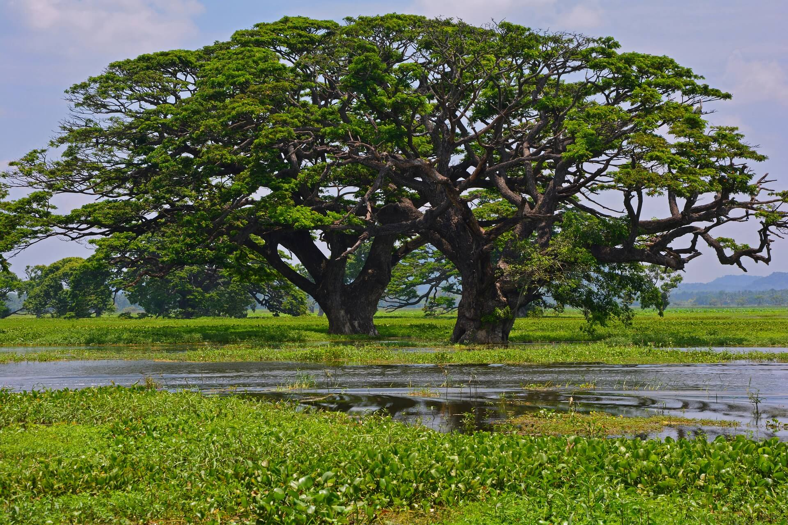
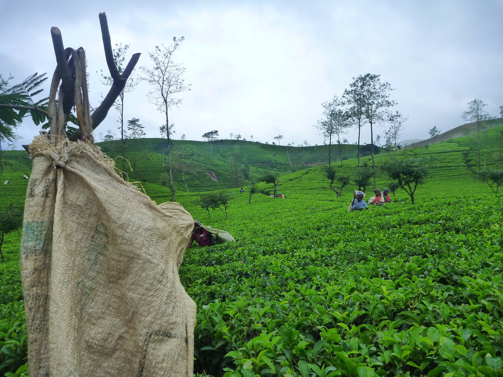
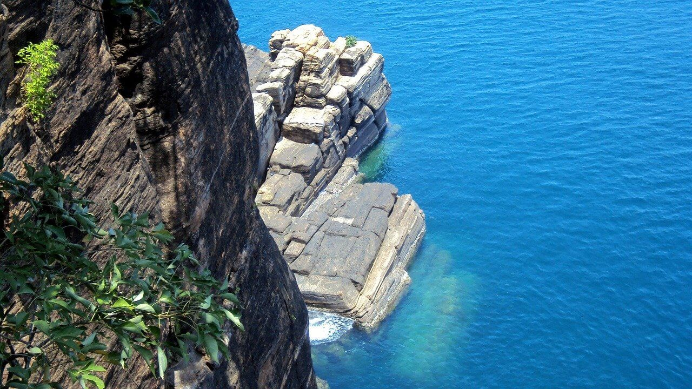

Travel
Travelling is one of my favourite hobby, I really like to travel in my leisure time. I really enjoy when I travel. Hiking and Camping are favourites part of travel and I like to travel with my friend and loving ones.
.jpg) 





Sri Lanka is a one of most beautiful country in the world.Despite being a relatively small island, Sri Lanka is endowed with a diverse collection of landscapes, climates and natural features. Sri Lanka’s infamous beaches have been enticing visitors for many years.
The North of Sri Lanka is a vibrant concoction of essences, with a unique flavour and culture.
The east of the island is home to lush paddy fields, spectacular sunrises, and a quieter more rural pace of life.
The central highlands are carpeted with emerald tea plantations interspersed with occasional waterfalls. Cool climates, misty views, and quaint estate bungalows are a throwback to bygone eras.
I really love to travel around my country and I hope to discover other parts which I did not travel.
My dream destination is Switzerland. one day I want to go there and spent my time with my family. Switzerland is like heaven on Earth. It has crystal clear blue lakes, awe inspiring mountains, beautiful old towns and the quality of life is very good - low crime, low corruption, efficient public transportation, clean cities, good economy and 4 languages.